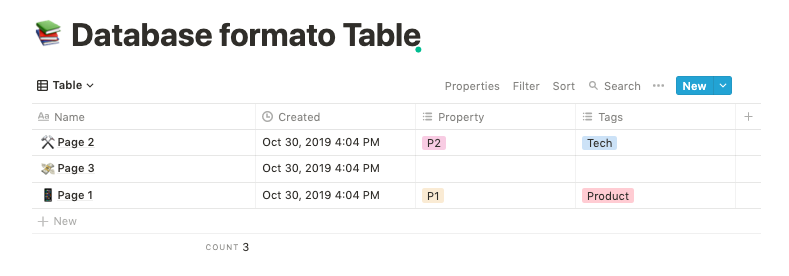
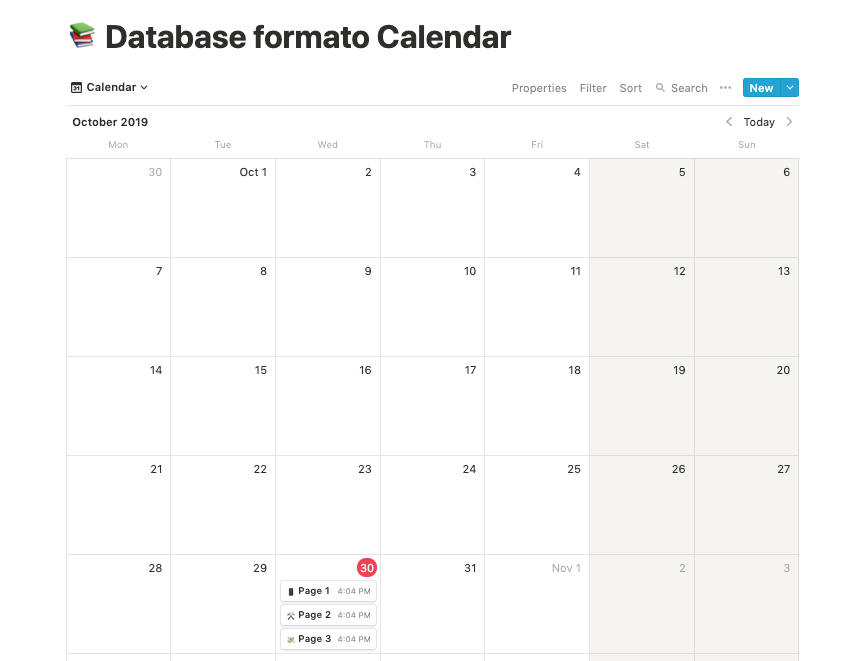

Notion, My brain backup
All-in-one workspace

Hace unos días compartía un Tweet, donde comentaba que después de un tiempo usando Notion.io había decidido comenzar a usarlo tanto en el trabajo como para tareas personales.
After a while using @NotionHQ, I think I'm in love with the tool. I will start using it for both personal and work tasks https://t.co/erxlxYbQbm pic.twitter.com/u1ri8u4Aza
— Alvaro Salazar üéÉ (@xala3pa) October 11, 2019
Quiero aprovechar este post para introducir la herramienta a todas aquellas personas que todavía no la conocen o no se han decidido a darle una oportunidad y contaros algunos de los usos que le doy a día de hoy.
Después de un tiempo de uso ha comenzado a sustituir a muchas de las herramientas que usaba con cierta frecuencia para organizarme, herramientas como Evernote, Pocket, Trello, Keep, y en algunos casos incluso a Google docs y Slack.
¿Qué es Notion?
Notion se auto define como un “all-in-one workspace”, una herramienta donde planificar, escribir, colaborar y organizarse.
En mi caso como os comentaba, he dejado de usar de forma paulatina en beneficio de Notion muchas de las herramientas que utilizo para organizarme en mi día a día. Poder tener flujos de trabajo soportados completamente en un única herramienta, ha supuesto en mi caso un incremento de productividad y sobre todo de foco.
Conceptos básicos
Workspaces
- Todo en Notion sucede dentro de un workspace, es el espacio donde podremos crear, combinar, anidar todas nuestras páginas.
- Un workspace puede ser compartido con otros usuarios de Notion, pudiendo ver y compartir cualquier página que forme parte del mismo.
- Podemos crear más de un workspace, para organizar nuestra información por ejemplo por temas. Notion nos permite navegar entre los distintos workspaces.
- Dentro de un workspace aquellas páginas compartidas de forma específica con alguno de los miembros del workspace se presentarán en el área Shared. El resto de miembros del workspace no tendrán acceso dichas páginas.
- Así mismo dentro de un workspace contamos con un área Privada, donde podremos guardar nuestras páginas donde únicamente nosotros tendremos acceso.
Página
- Un página en Notion es un Canvas limpio dentro de un workspace, donde podemos añadir el contenido que queramos.
- Las páginas se pueden anidar creando una jerarquía.
- Podemos compartir la visibilidad de un página. Hablaremos más adelante sobre cómo compartir y añadir colaboradores a las páginas y workspaces.
Bloques
- Podríamos definir un bloque como la unidad mínima de contenido de un página. Por ejemplo, un parágrafo, una imagen, un video, etc.
- Otra forma de definir los bloques sería decir que son el sistema de Lego de Notion, permitiéndonos combinaciones casi infinitas. Nuestra imaginación es el límite.
- Notion mantiene una separación de responsabilidades entre el contenido y el formateo de un bloque , lo cual nos permite convertir un bloque en otro tipo de bloque formateando la información en función de este nuevo tipo.
- Más información: What is a block?
Databases
- Un database en Notion, podríamos definirlo como una estructura que nos permite organizar, filtrar, buscar, categorizar y visualizar información.
Existen 5 tipos de databases que podemos crear en Notion:
- Lista
- Gallery
- Table

- Board
- Calendar

Podemos crear un database como cualquier otro bloque seleccionando el tipo que más se adapte a nuestra necesidades.
Un database puede tener diferente tipos de vistas, es decir podemos transformar una de tipo Lista en una de tipo Gallery.
El contenido de un database se puede filtrar y ordenar.
Existen dos formatos: Full page, creando el database a página completa o In-line, embebida en otra página.
Podemos hacer referencia del contenido de un database desde otra página o database.
- El contenido de un database se puede definir como un template, de modo que podamos replicar su contenido, estructura y propiedades con un solo click.
- Una vez definido el formato de un database, si queremos prevenir que nadie más lo cambie podemos bloquear dicho database.

- Notion nos permite conectar información de dos databases por medio de la propiedad relation, de este modo podemos linkar información de una tabla en otra tabla y relacionar el contenido de ambas databases.
- Además de poder linkar información de dos databases, podemos mostrar información de un database en una columna de otra database, por medio de la propiedad rollup. Una vez linkeadas ambas databases, haciendo uso de la propiedad rollup podemos seleccionar qué propiedad de un database mostrar en una columna del otro database.
- Más información: Intro to Databases
Templates
- Es común que después de estar un rato combinando bloques, necesitemos reutilizar el mismo formato en otra página. Los templates nos permitirán esencialmente hacer uso de dicho formato tantas veces como nos sea necesario.
- Podemos en nuestras páginas replicar contenido de forma sencilla por medio de los Template Buttons. Seleccionando desde el listado de bloques las opción de Template button. Pudiendo incluso duplicar el formato de una página completa con un solo click.
- Más información sobre las Template Buttons: Create your own templates
- Por otro lado, la mayoría de las databases tienen contenido del mismo tipo que necesitamos reutilizar constantemente como os comentaba en el apartado anterior. Para poder reproducir este contenido una y otra vez de manera sencilla podemos hacer uso de las Database Templates.
- Más información: Databases Templates
- Además de la templates que hemos comentado, Notion nos proporciona un listado de más de 50 templates que podemos usar y personalizar según nuestras necesidades. Para acceder al listado de templates podremos hacerlo desde el menú lateral, opción: templates.
- Listado completo de templates: Notion Template Gallery
- Otra opción que nos brinda Notion es poder hacer pública alguna de nuestras páginas para que otro usuario pueda duplicar dicha página en su workspace. Más información sobre la publicación de páginas: Public pages & web publishing
- Basado en esta idea existe un página web donde la comunidad sube su páginas para que las podamos usar a modo de plantilla duplicando la página en nuestro workspace: Notion Pages ⚡️
Compartir y colaborar en Notion
- En Notion podemos compartir nuestro workspace con otros usuarios, añadiéndoles como colaboradores, pudiendo a su vez compartir, editar o colaborar en las páginas de forma conjunta. Podemos incluso añadir todos los miembros de un dominio de forma sencilla.
- Otra forma de colaboración en Notion es compartiendo alguna de nuestras páginas o databases, pudiendo incluso hacer un página pública. Una vez compartida una página podemos gestionar los permisos sobre dicha página.
- Las páginas las podemos compartir de forma individual o crear grupos dependiendo según la necesidad.
- Notion permite colaboración en tiempo real, cualquier colaborador puede editar el contenido de una página o databases al mismo tiempo que nosotros. Notion nos mostrará su avatar en la sección que dicho usuario esté modificando.
- Dentro de todas las opciones de colaboración que nos provee Notion, podremos mencionar a una persona usando @ seguido de su nombre de usuario.
- Todas las páginas en Notion tienen un área donde podemos añadir comentarios anotando a otros colaboradores a modo de “Slack”
- Notion también nos permite añadir comentarios sobre un texto, imagen u otro bloque de una página.
Varios
- Notion cuenta con app para escritorio, Mac y Windows así como versión móvil para iOs y Android.
- Tanto en versión móvil como desktop podemos salvar contenido de internet directamente en alguna de las páginas de nuestro workspace. Para la versión desktop contamos con un add-on para las versiones de navegador Chrome y Firefox. Más información: Web Clipper.
- Notion nos permite conectar aplicaciones de terceros, incluso facilitando el volcado de información de otras aplicaciones con Trello, Asana, Evernote…
- Notion tiene un plan gratuito que nos permite 1000 bloques por cada workspace. Yo estoy haciendo uso tanto para temas personales y laborales y no he necesitado de momento hacer el upgrade a la versión de pago, que por otro lado tiene un precio muy razonable de 4$ al mes.
Mejoras y opinión personal
- Después de unos meses usando Notion, creo que todavía tiene mucho margen de mejora, pero siendo honesto el equipo de Notion está haciendo un gran trabajo.
- Echo de menos cosas como un sistema de scripting que me permita programar cosas o una API pública que pueda usar y me de flexibilidad para incluirlo en otras herramientas o automatizar flows dentro de la herramienta.
- También creo que tienen cosas por mejorar, como es la experiencia de la aplicaciones desktop y nativas, así como el rendimiento de la aplicación en general, a veces los tiempos de respuesta no son buenos.
- Y algo que echo mucho de menos ahora que tengo más contenido es un buen buscador, el actual no indexa bien el contenido y dejar de tener sentido encontrar información por medio del buscador.
Usos y aplicaciones de Notion
Gracias a la flexibilidad que nos dan los bloques los usos y aplicaciones que le podemos dar a Notion son casi infinitos, hay gente muy creativa haciendo uso espectacular de Notion.
Os dejo por aquí alguno de los usos más comunes de Notion y alguno otro no tan común:
Meeting Notes
To-Do
Wiki
Company Home
Estos son algunos de los usos más comunes de Notion, os dejo por aquí el link a la galería de templates de Notion que os comentaba antes: Notion Template Gallery y el enlace a Notion Pages , donde la comunidad comparte sus templates: Notion Pages ⚡️.
Antes de terminar quería aprovechar para compartir alguno de los usos que hago de Notion en mi día a día y en particular en mi actual empresa.
Hace unos días compartía un post sobre como es el Onboarding que estamos construyendo en Lookiero y comentaba que una de las herramientas que usamos para ello es Notion.
Dependiendo del equipo, hemos preparado una template diferente que nos ayude a hacer tracking de cómo está yendo el proceso de onboarding, como os comentaba en el post.
Otro de los usos que hago es para gestionar mis OKRs (Comentaré en un post futuro sobre los OKRs):
Para cada uno de los OKRs, internamente tengo una tabla donde defino el Objetivo y los Key Results. Por medio de un Relation vínculo cada KR con el action item de otra de las databases donde tengo todos mis To-Do.
Espero que si has llegado hasta aquí te haya resultado útil el post, como os comentaba Notion es una herramienta muy flexible de modo que encontrarás alguna manera de que encaje en tu día a día sin problemas.
Si te ha gustado el post por favor compártelo para que le puede llegar a más gente. ¡Muchas gracias!